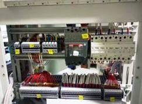
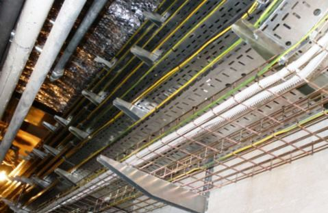

Электрик слаботочник в СПБ.
Качественный электромонтаж в Санкт-Петербурге и ленобласти, стаж 12 лет. Частный электрик, недорого и качественно.
Тел. 8 904 642 08 57 Николай.

Здравствуйте.
Я частный электрик, который качественно осуществляет работы в СПБ и очень любит свою работу.
Я оказываю услуги в течение долгого времени, провожу работы быстро и с гарантией качества. Являюсь дипломированным специалистом, мастером своего дела, имеющим лицензии и допуски на обширный спектр работ, так что Вам не придется переплачивать за услуги других работников. При необходимости обязательно предоставлю комплект необходимых документов, доказывающий мой богатый опыт и надежность предоставляемых услуг.

Выполню любые работы за сравнительно небольшую цену! Никаких накруток, Вы платите только за услугу и материалы. Смета составляется прямо на месте, Вы сможете видеть, откуда берется цена. Я, частный электрик слаботочник, никогда не опаздываю на работу, приду точно в назначенное время, в отличие от других электриков в СПБ. Не пью. Работаю в выходные и праздники, вызывайте меня в любое удобное для Вас время, и я приду на помощь в кратчайшие сроки. При проведении работ учитываю все технические возможности, мои услуги абсолютно безопасны и надежны, так как выполняются все регламентируемые правила. Работаю с любой неисправностью, помогу даже в, казалось бы, безвыходной ситуации. Сроки работ устанавливаете Вы сами, а выполню все — как для себя: добротно, первоклассно, как нельзя лучше! Я постоянно повышаю квалификацию, чтобы освоить новые технологии и делать свою работу все качественнее и качественнее.

Вызов частного электрика слаботочника в СПБ на дом — одна из наиболее часто требующихся услуг, поэтому необходимо быть уверенным в квалифицированности вызываемого специалиста. Часто по вине недобросовестного электрика происходят пожары, так как он мог ошибиться при электромонтаже. Защитите себя и своих близких, полагайтесь только на специалиста, которому доверяете. Прочтите отзывы и комментарии о моей работе и убедитесь, что она всегда выполняется на высшем уровне, а потом добавьте туда свои впечатления обо мне.
В моем арсенале только надежная аппаратура. Работаю аккуратно, без шума и пыли. Произвожу гарантийное и постгарантийное обслуживание.
Помогу с установкой бытовой техники. Самостоятельная ее установка может иногда привести к неправильной работе, поломке или даже возникновению пожароопасной ситуации, так что лучше довериться опытному профессионалу со стажем. Это займет совсем немного времени, а гарантия будет обеспечена. Сделаю все по евростандартам!
Проведу монтаж люстры.
Это тяжелая работа для не смыслящего в данном деле человека, здесь нужны особые знания и навыки. Учитываются технические характеристики осветительного прибора, внешние особенности и тип потолка, и лишь затем осуществляется монтаж. Необходимо четко следовать технике безопасности, правильно подобрать крепежный материал и зафиксировать анкер, чтобы предотвратить падение осветительного прибора и последующее возгорание. Частный электрик слаботочник поможет избежать этой проблемы, и вещь будет радовать Вас долгое время, создавая комфорт в доме.
Сделайте звонок или оставьте заявку, и я примчусь исправить Вашу бытовую проблему. Точно проведу диагностику, составлю смету, и мы оговорим окончательную стоимость работ (включая материалы). Оплата производится после выполнения мной работ, проверки работоспособности сетей и прочего оборудования. Также работаю с организациями.
Хочу привести примеры, для чего еще иногда нужны услуги электрика слаботочника. Итак, при замене электропроводки повышается надежность электрической системы в целом, становится удобнее и безопаснее пользоваться приборами. Для большей безопасности можно установить устройства защитного отключения в щите, это может спасти жизнь при аварии, связанной с электроприборами. Ни в коем случае не пытайтесь самостоятельно решить возникшую проблему с электроприборами! Это может быть опасно для здоровья и жизни!
Список предоставляемых частным электриком услуг:
- монтаж электрощитов
- работы в электрощитах
- монтаж, демонтаж и замена электропроводки
- прокладка открытой электропроводки
- установка, монтаж или замена выключателей и розеток
- установка или замена электросчетчиков
- подключение бытовой техники и других электрических приборов
- работа с системами освещения и осветительными приборами
- заземление
- штробление стен под проводку
- прокладка кабелей
- изоляция контактов
- установка автоматов
- прокладка электрокоробов
- установка и замена устройства защитного отключения
- установка и замена стабилизаторов
- работа с антеннами
- ревизия внутриквартирной силовой электропроводки
Выполню с величайшим удовольствием для Вас все, начиная с простой замены розетки и заканчивая комплексным ремонтом любой электрики. Если имеются какие-либо вопросы — свяжитесь со мной, все расскажу и объясню, дам необходимый совет.
И спасибо, что выбираете меня.
 Поменять проводку в квартире.
Поменять проводку в квартире. Сколько будут стоить материалы.
Карта сайта.
Замена электропроводки в панельном доме.
Расценки на электропроводку квартир.
Замена проводки в хрущевке.
Электромонтаж в частном доме.
Электрика в загородном доме.
Сколько стоит замена электропроводки в двухкомнатной квартире?.
Сколько стоит проложить проводку в 3 ком квартире?
Сколько стоит проложить проводку в четырех комнатной квартире?
Сколько стоит сделать внутреннюю проводку?.
Стоимость штробление стен.
Установка люстр и светильников.
Замена электропроводки в панельном доме.
Электромонтаж проводов в бане.
Электрика в загородном доме